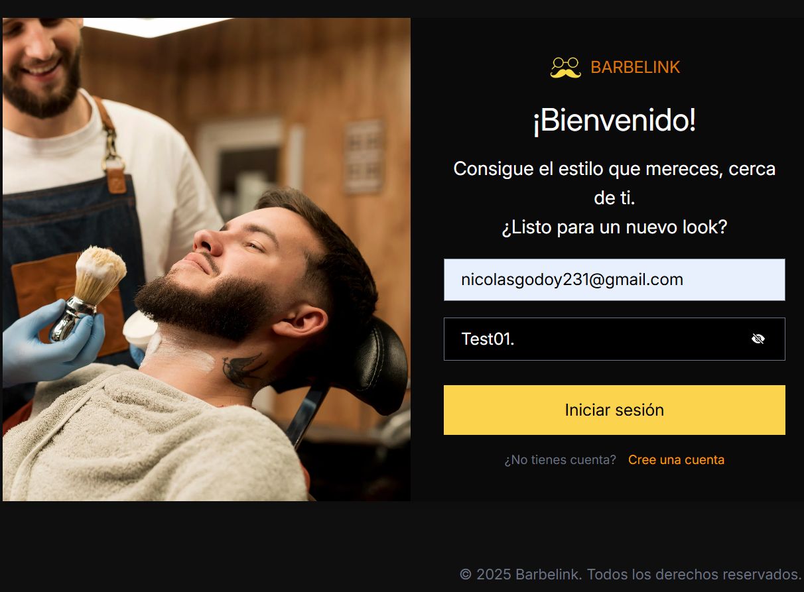
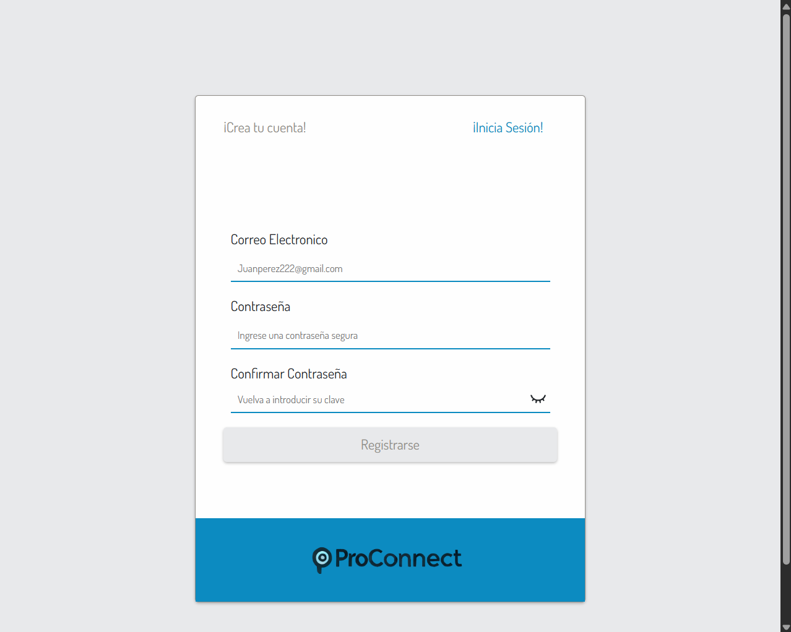
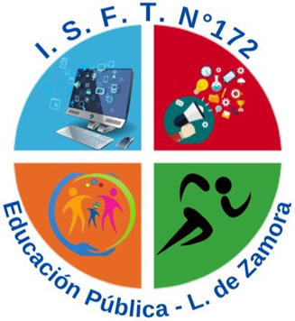
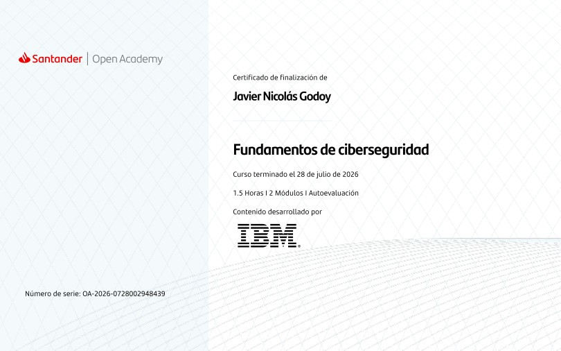
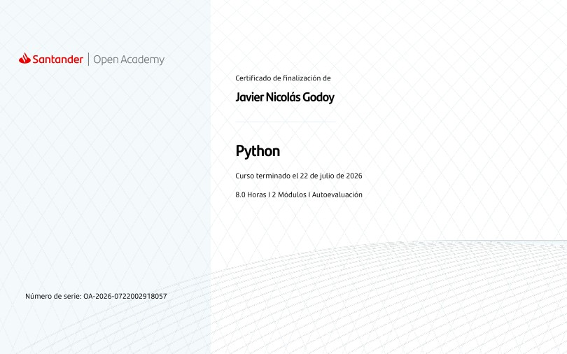
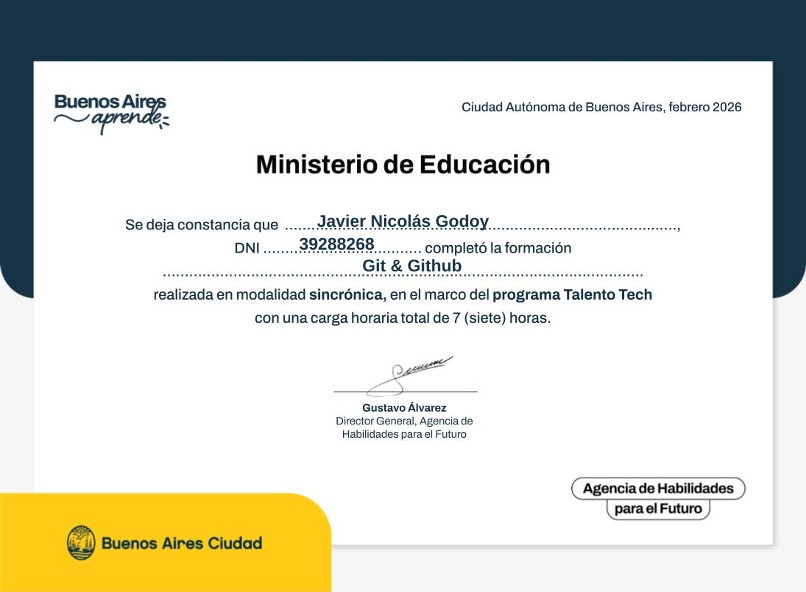
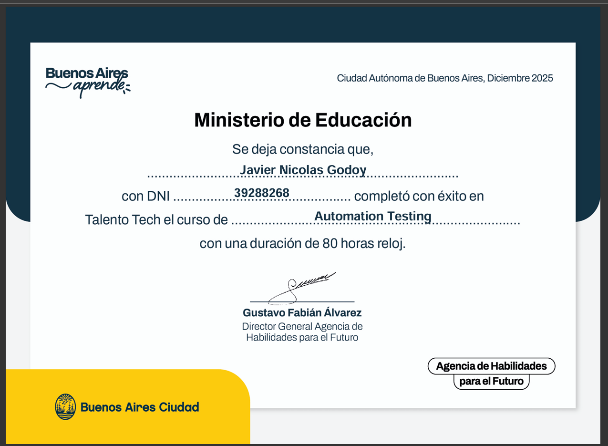
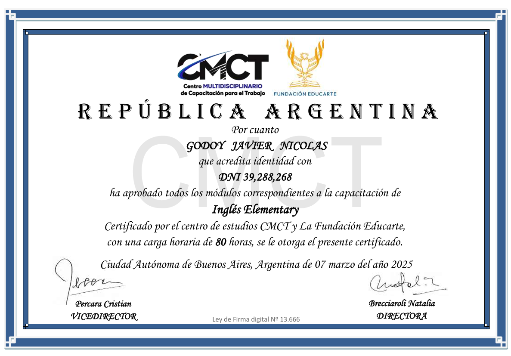
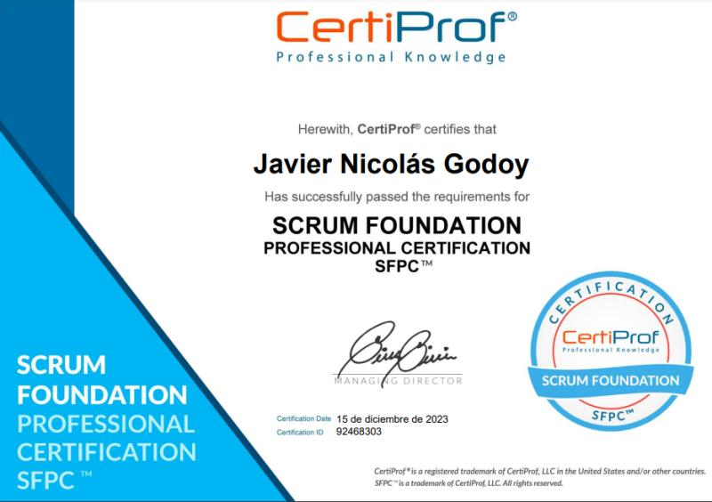

Proyectos
-

BarbeLink
Manual (Web/Mobile)
-

ProConnect
Manual (Web)
-
Mercado Libre (Práctica QA)
Manual (Web/Mobile)
Análista de Sistemas con experiencia como QA Tester en gestión de incidencias, documentación y metodologías ágiles. Formación en Soporte IT, ciberseguridad y programación. Interesado en posiciones dentro del área de tecnología, aportando capacidad de aprendizaje, resolución de problemas y compromiso.

Manual (Web/Mobile)

Manual (Web)
Manual (Web/Mobile)
• Testing funcional y exploratorio: planificación y ejecución de pruebas sobre las funcionalidades principales, tanto durante el desarrollo como antes de las entregas.
• Diseño de casos de prueba: creación de casos de prueba a partir de requerimientos funcionales, historias de usuario y criterios de aceptación.
• Reporte y seguimiento de defectos: identificación, documentación y seguimiento de incidencias, incluyendo pasos para reproducirlas, severidad y prioridad.
• Análisis de requerimientos: revisión de requerimientos y validación de que las funcionalidades desarrolladas cumplan con lo esperado.
• Análisis funcional: detección de posibles mejoras en funcionalidades y flujos de la aplicación, aportando sugerencias desde la perspectiva del usuario.
• Documentación: elaboración de Test Plans, casos de prueba, historias de usuario, criterios de aceptación y reportes de incidencias.
• Trabajo con metodología Scrum: participación en dailys y colaboración con desarrollo durante las distintas etapas del proyecto.
• Comunicación y trabajo en equipo: comunicación clara de problemas, observaciones y resultados de las pruebas, acompañando al equipo en la resolución de incidencias.

• Diseño y ejecución de casos de pruebas.
• Ejecución de pruebas funcionales, exploratorias y de regresión.
• Identificación y reporte de defectos con su asignación de severidad y prioridad, con sus pasos para reproducir.
Instituto Superior de Formación Técnica N° 172 - Alan Turing 
Cisco Networking Academy
Santander Open Academy 
Curso introductorio a la ciberseguridad, donde adquirí conocimientos sobre amenazas digitales y físicas, ingeniería social y principios fundamentales de seguridad. También aprendí a identificar tipos comunes de ciberataques, estrategias básicas de protección de sistemas y datos, y aspectos éticos relacionados con la ciberseguridad.
Santander Open Academy

En este curso aprendí a trabajar con variables, tipos de datos, estructuras de control, estructuras de datos y funciones. También adquirí conocimientos sobre manejo de errores y excepciones, entrada y salida de datos, e importación y creación de módulos para organizar y reutilizar código.
Talento Tech 
Formación práctica en control de versiones utilizando Git y GitHub. Aprendí a crear y gestionar repositorios, registrar cambios mediante commits, trabajar con ramas, sincronizar proyectos entre repositorios locales y remotos, resolver conflictos y utilizar pull requests para la colaboración y revisión de cambios en proyectos.
Talento Tech 
Formación introductoria en Automation Testing, con contenidos sobre Python, Git y GitHub, Pytest y fundamentos de automatización de pruebas. También tuve una introducción al uso de Selenium WebDriver, localización de elementos mediante selectores CSS y XPath, y conceptos básicos de automatización de pruebas web.
Centro Multidisciplinario de Capacitación para el Trabajo 
Formación inicial en inglés, con práctica de comprensión y lectura de textos, expresión oral y escrita. Realicé actividades de conversación con compañeros y ejercicios de comprensión a partir de textos trabajados durante el curso.
CertiProf 
Adquirí conocimientos sobre los principales roles, eventos y artefactos de Scrum, así como sobre su aplicación dentro de equipos de trabajo ágiles.
Proyecto Nahual
Formación en testing de software orientada a la planificación, diseño y ejecución de casos de prueba. Aprendí a analizar requerimientos, detectar y reportar defectos de acuerdo con su impacto, y documentar los resultados de las pruebas para contribuir a la calidad del software.